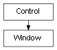

class cymel.ui.window.Window¶

-
class
cymel.ui.window.Window¶ ベースクラス:
cymel.ui.control.Controlmel UI の window ラッパークラス。
withで setParent が行える。Methods:
UICMDchangeToDockControl([allowedArea, area])ウィンドウをドッキングコントロール化する。 children()ウィンドウが持つ子コントロールを全て得る。 delete()ウィンドウを削除する。 layout()ウィンドウが持つレイアウトを1つ得る。 layouts()ウィンドウが持つレイアウトを全て得る。 makeCurrent()これをカレントペアレントにする。 name()ウィンドウ名を得る。 parent()親は得られない。 show()ウィンドウを表示する。 window()このウィンドウそのものを得る。 Methods Details:
-
UICMD()¶
-
changeToDockControl(allowedArea=('left', 'right'), area=None, **kwargs)¶ ウィンドウをドッキングコントロール化する。
戻り値の型: DockControl
-
delete()¶ ウィンドウを削除する。
-
makeCurrent()¶ これをカレントペアレントにする。
-
show()¶ ウィンドウを表示する。
-